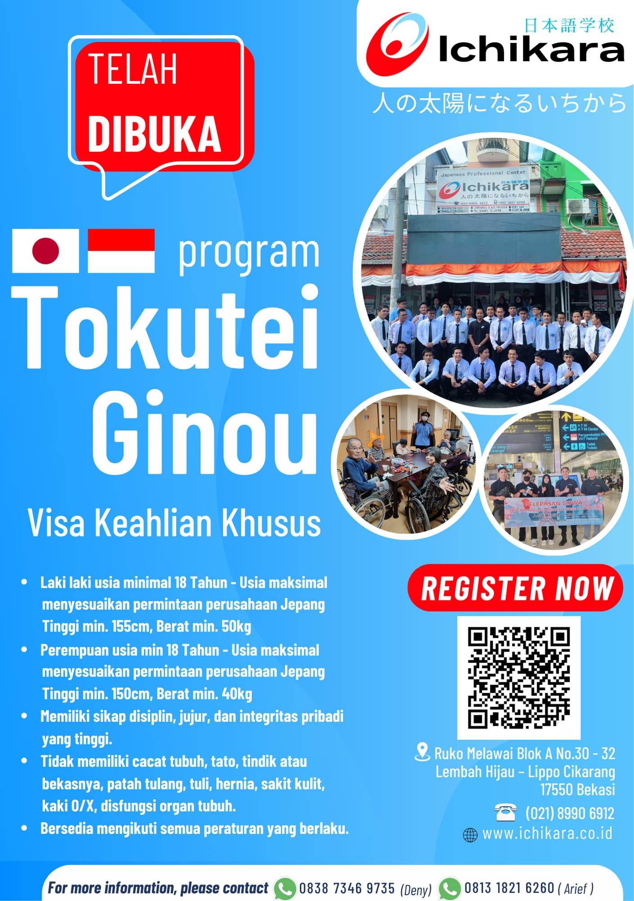
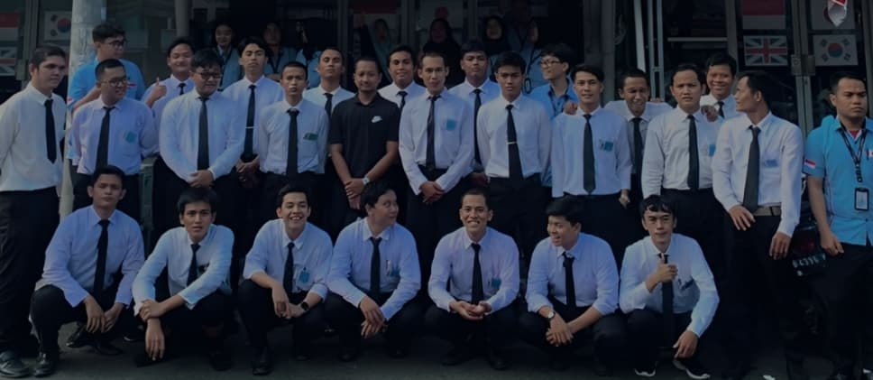

Tokutei Ginou / SSW
Wujudkan impian bekerja di Jepang bersama PT. Ichikara. Kami mendampingi Anda dari persiapan bahasa hingga penempatan kerja.

Apa itu Tokutei Ginou?
Tokutei Ginou (特定技能) adalah program visa Jepang yang memungkinkan tenaga kerja asing dengan keahlian tertentu bekerja secara legal di Jepang. Dikenal juga sebagai Specified Skilled Worker (SSW).
Program ini membuka peluang kerja di 14 sektor industri Jepang, mulai dari manufaktur, agrikultur, hingga perhotelan. Gaji kompetitif dengan standar Jepang dan kesempatan untuk memperpanjang visa.
14
Sektor Industri Tersedia
5 Th
Masa Tinggal SSW-1
Proses Pendampingan Kami
4 tahap terstruktur dari persiapan awal hingga keberangkatan ke Jepang.
Konsultasi Awal
Penilaian kesiapan kandidat: level bahasa, pengalaman kerja, dan sektor yang diminati.
Persiapan Bahasa
Kursus bahasa Jepang intensif dan persiapan ujian JFT-Basic yang menjadi syarat visa SSW.
Pengurusan Dokumen
Bantuan lengkap administrasi visa, legalisasi dokumen, dan koordinasi dengan perusahaan di Jepang.
Keberangkatan
Pembekalan budaya kerja Jepang, dukungan penempatan, dan pendampingan awal di Jepang.
Syarat Pendaftaran
-
Usia 18 – 35 tahun
Batas usia dapat berbeda tergantung perusahaan penempatan
-
Lulus JFT-Basic atau JLPT N4
Sertifikasi bahasa Jepang minimum yang dipersyaratkan pemerintah Jepang
-
Lulus Skill Evaluation Test
Ujian kompetensi teknis sesuai sektor industri yang dipilih
-
Tidak sedang dalam program Magang
Kandidat aktif program Technical Intern Training tidak dapat mendaftar bersamaan
Sektor Populer

Mulai Perjalanan ke Jepang Anda
Konsultasikan kesiapan Anda bersama tim ahli kami. Gratis, tanpa komitmen.
Konsultasi via WhatsApp